前回に続いて、パラメトリック曲線です。前回は、一番簡単な直線の運動を扱いました。 直線は真っ直ぐなので、『曲線』を表現するためにはあまり使われません （他の理由で色々つかえるので、取り上げましたが・・・）。 実際に多く使われ、また、使い勝手がよいものは、3次曲線です。
どうして、3次曲線が良いのでしょうか？ ちょっと物理学を考えてみましょう。『慣性の法則』を思い出して下さい。 力が加わっていなければ、動いている物は真っ直ぐに進むというやつです。 『慣性の法則』は、物体の位置や速度によりません。つまり、位置だけでなく、 速度も曲線の変数として、自由に設定できるということです。 さて、どうしてそれが3次曲線なのでしょうか？それは、設定できる変数が、 初期位置、最終位置、初期速度および最終速度の４つだからです。 一般に、自由度を n 個持つ曲線は、n - 1 次の多項式で表現できます。 前回、初期位置、最終位置の２つを設定した曲線は、１次曲線になりました。 同様に、４つの変数を指定する曲線は、３次曲線になります。
ということで（別に証明したわけではないですが）、位置と速度を指定する場合には、 ３次曲線を使います。では、具体的にはどう使うのでしょうか？ 例えば、サッカーでのシュートの表現が考えられます。 サッカーのゴールシーンを作る時に、一番操作しやすいパラメータは、 蹴る位置、蹴る勢い（方向と強さ）、ゴールした位置、ゴールに突き刺さった時の勢い だと思います。これがまさに、３次曲線の変数になります。 蹴る位置、ゴールした位置を x0, x1、 蹴る勢い、ゴールに突き刺さった時の勢いを v0, v1 とします。

これを、一般の３次曲線の式
X = x (t) = at3 + bt2 + ct + d
に代入して、係数a、b、c 及び d を求めます。 これを計算すれば、
┌ 2 -2 1 1┐┌ x0 ┐
x(t) = [t3 t2 t 1]│-3 3 -2 -1││ x1 │
│ 0 0 1 0││ v0 │
└ 1 0 0 0┘└ v1 ┘
となります。実は、この初期位置、速度及び、最終位置と速度を変数に持つ曲線には、 特別な名前が付けられていて、Ferguson / Coons 曲線と呼ばれます。 この後出て来る Bezier 曲線や B-Spline 曲線とは、変数とする物が違うだけで同じ物を表現しています。 この後、色々と出てきても、『あぁ、それぞれに使い易い場所があるから書き換えてるんだ』と思ってください。
最後の結果を行列とベクトルの積にまとめたのは形をきれいにする以上の意味があります。 実際に３次曲線を扱う時に、x0, x1, v0, v1 が決まっている場合が多々あります。そんな時は、後ろの積を先に計算して
┌ 2x0 - 2x1 + v0 + v1 ┐
x(t) = [t3 t2 t 1]│-3x0 + 3x1 - 2v0 - v1 │
│ v0 │
└ x0 ┘
とすれば、使う時に時間の冪とベクトルの積だけの計算に収まります。逆にあらかじめ計算する時刻が決まっているなら、
┌ x0 ┐
x(t) = [2t3-3t2+1 -2t3+3t2 t3-2t2+t t3-t2]│ x1 │
│ v0 │
└ v1 ┘
として、x0, x1, v0, v1が決まった時点で x(t) をすぐに求めることができます。 シチュエーション次第で（あらかじめ用意しておくことによって）計算を軽くすることができます。 x(t) を行列ではさんだベクトルの形式でまとめておくのは、しばしば有用になるので、覚えておくと良いと思います。
最後にひとつ注意しなければならないことがあります。速度を位置のパラメータ微分にしました、 これは時間微分とは異なります。パラメータ微分を元の時間変数で記述すると、
dx(t) d X(T) d X(T)
v(t) = ―― = ――――― = (T1 - T0) ―――,
dt T - T0 d T
d ―――
T1 - T0
となります。従って、現実の速度をパラメトリック曲線の速度に変換する時は、時間間隔 T1-T0 を掛けて下さい。
Ferguson / Coons 曲線は速度を指定しますが、コンピュータの画面で速度を指定するのはなかなか大変なので、 位置を 4 点指定することにより、曲線を指定する方法が存在します。その方法の一つの曲線が Bezier 曲線です。 位置として指定する点を制御点と呼びます。Bezier 曲線の制御点は、始点と終点 及びその間の２点になります。具体的には、Ferguson / Coons 曲線の変数と、
P0 = x0 x0 = P0 P1 = x0 + v0 / 3 ⇔ x1 = P3 P2 = x1 - v1 / 3 v0 = 3 (P1 - P0) P3 = x1 v1 = 3 (P3 - P2)
の関係で結ばれます。

Bezier 曲線をあらわに書くと、Ferguson / Coons 曲線の行列で書いた式と、上の関係式から、
┌ 2 -2 1 1┐┌ 1 0 0 0┐┌ P0 ┐
x(t) = [t3 t2 t 1]│ -3 3 -2 -1││ 0 0 0 1││ P1 │
│ 0 0 1 0││-3 3 0 0││ P2 │
└ 1 0 0 0┘└ 0 0 -3 3┘└ P3 ┘
┌ -1 3 -3 1┐┌ P0 ┐
= [t3 t2 t 1]│ 3 -6 3 0││ P1 │
│ -3 3 0 0││ P2 │
└ 1 0 0 0┘└ P3 ┘
となります。この式を、さらに変形すると、
┌ P0 ┐
x(t) = [1-3t+3t2-t3 3(t-2t2+t3) 3(t2-t3) t3]│ P1 │
│ P2 │
└ P3 ┘
┌ P0 ┐
= [(1-t)3 3t(1-t)2 3t2(1-t) t3]│ P1 │
│ P2 │
└ P3 ┘
= Σ3i=0 3Ci ti(1-t)3-i Pi,
但し、
n!
nCm = ―――――, n! = n (n-1)･･･3 2 1.
m!(n-m)!
となります。最後の式にはいたるところ『3』という数字が出ています。この『3』は実は３次曲線の３です。 『3』を別の数字に変えると、その次数に応じた Bezier 曲線を作れます。例えば次数を『1』にすると、
x(t) = Σ1i=0 1Ci ti(1-t)1-i Pi,
= (1 - t) P0 + t P1
= (P1 - P0) t + P0,
となります。これは見覚えがありますね。１次の Bezier 曲線はP1、P0を結ぶ直線になります。n 次の Bezier 曲線は一般に P0 から始まって、 P0→P1→P2→･･･→Pn-1→Pn と、順順に近づいて、最後にPnに到着する性質があります。必ず、Piに着くとは限りませんが、制御する時の目安として、近づいてもらいたい場所に番号順に並べるようにすればいいことがわかります。
さて、最後にもう一つだけ曲線を取り扱いましょう。 最近、本を読んで、この曲線が Catmull Rom 曲線という名前が付いていることを知りました。 やはり、みんなが使いそうなものには名前がついているものです。
Ferguson / Coons 曲線はなかなか使いやすいのですが、なんせいつも速度ベクトルを指定しなくてはなりません。 Bezier 曲線は、全ての制御点を点として指定できるのですが、通過しない制御点の制御が大変です。 点列が沢山あった場合に、その中の連続した４点を制御点とする曲線が Catmull Rom 曲線です。 この曲線を繋げば、点列を３次曲線で繋ぐことができます。 なおかつ、それは次の曲線に滑らかにつながるものです。

さて、その作り方ですが、まず、Ferguson / Coons 曲線を元にします。 Ferguson / Coons 曲線は、設定する２点は通過するわけですから、それはそのまま制御点として用い。 残った速度を制御点で表現すればよいことになります。 なおかつ、その速度の表現に関して、終点の速度が次の始点の速度に等しければ、滑らかにつながります。 これは、速度の制御点による表現が i だけに依存し、初期速度と最終速度の形が ( i をずらしただけの) 同じ形になっていれば条件は満たされています。
ここでは、速度の表現として、最初と最後の移動量
dxi = xi - xi-1,
の、始（終）点の前と後ろに関する平均を採用します。
1 1
vi = ― (dxi + dxi+1) = ― (xi+1 - xi-1)
2 2
この速度の表現を用い、t = 0, 1 で、Pi, Pi+1を通る曲線は、 ちょちょちょっと計算すると、
1 ┌ -1 3 -3 1┐┌ Pi-1 ┐
xi(t) = ― [t3 t2 t 1]│ 2 -5 4 -1││ Pi │
2 │ -1 0 1 0││ Pi+1 │
└ 0 2 0 0┘└ Pi+2 ┘
となります。
さて、この曲線は Pi から Pi+1までを繋ぎますが、 Pi-1, Pi+2 に依存しています。 P0 から Pn+1 迄の点列を曲線で繋ごうとした場合に、 0 番目と n 番目の曲線は、P-1 と Pn+2 の点がない為に、 曲線 x0(t), xn(t) を求められません。 従って、ここだけは特別な速度を使わなくてはなりません。 ここでは、平均的には最初と最後の速度の中間の速度で移動した、と仮定します。
1
dx1(t) = x1 - x0 = ― (v0 + v1)
2
ちなみに、最初の『=』は定義で、後半の『=』が仮定です。 この仮定を用い計算すると、境界での曲線の方程式は、
1 ┌ 0 0 0 0┐┌ 0 ┐
x0(t) = ― [t3 t2 t 1]│ 0 1 -2 1││ P0 │
2 │ 0 -3 4 -1││ P1 │
└ 0 2 0 0┘└ P2 ┘
1 ┌ 0 0 0 0┐┌ Pn-1 ┐
xn(t) = ― [t3 t2 t 1]│ 1 -2 1 0││ Pn │
2 │ -1 0 1 0││ Pn+1 │
└ 0 2 0 0┘└ 0 ┘
となります。 以上により、P0 から Pn+1 迄を繋ぐ３次曲線 x0(t) 〜 xn+1(t) の方程式ができました。
この曲線を用いたサンプルを用意しました。